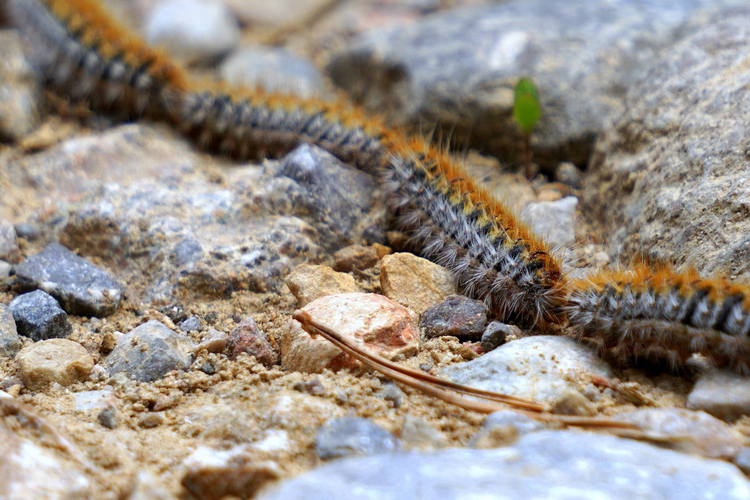
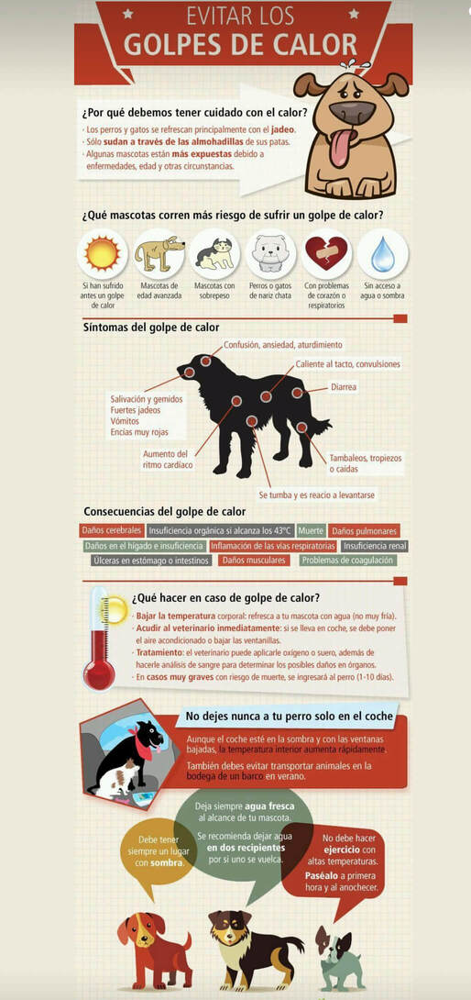

Consejos & Cuidado Animal
Consejos Generales
- Revisiones veternarias periódicas, es importante acudir para detectar posibles enfermedades y tener todas las vacunas al día para protegerlo de toda adversidad posible. Identificaión y microchip.
- Asegura su entorno de posibles amenazas.
- Evita castigos físicos o gritos, la educación positiva fortalece más el vinculo y lo aleja de posibles problemas de conducta en el futuro.
- Si en la rutina del peludo la alimentación siempre va después de los paseos, esto evita que se pueda producir una torsión de estómago, es una aletración por acumulación de líquido, gas y alimento que puede ser mortal. Los paseos deberán estar alejados 2 horas antes o después de las comidas.
- Tras el transcurso de un largo paseo o debido a una gran excitacion del animal, bien sea porque haya hecho deporte o haya estado jugando, no se le debe de dar agua en ninguno de los casos hasta que por lo menos hayan transcurrido al menos 30 min. se haya calmado y regulado, lo conveniente es un paseo tranquilo y después se puede proceder a darle agua, esto evitará que se produzcan problemas como la torsión de estómago. Algunos síntomas serián como no poder tumbarse,abdomen muy hinchado, nauseas, salivacion excesiva e inquietud.
- La ubicación del bebedero en los felinos, se recomienda que esté alejado tanto del arenero, como del comedero. Los felinos necesitan tener sus espacios y por instinto evitan contaminar su fuente de hidratación con las bacterias de los alimentos.
- Alimentar a nuestros perros y gatos( sobre todo los gatos) con comida húmeda(latas) ayuda a prevenir problemas renales y urinarios por su alto contenido en agua. La comida húmeda aporta hidratación adicional, mientras que el pienso seco ayuda a una buena salud dental.
Primavera
Consejos a tener en cuenta para la llegada de la Primavera.
Orugas procesionarias

La procesionaria es un insecto que abunda en los pinos de Europa, Asia, el norte de África y algunas zonas de América del Sur. Las orugas (larvas) están cubiertas de pelos urticantes que se desprenden y flotan en el aire, por lo que pueden provocar irritación en oídos, nariz y garganta puesto que son altamente venenosos para los animales, así como intensas reacciones alérgicas. La sustancia que le atribuye esta capacidad urticante es una toxina termolábil denominada Thaumatopina.
Los síntomas más característicos son:
- Vómitos y diarreas, en la mayoria de los casos con sangre.
- Pupilas dilatadas.
- Agitacion y nerviosismo repentino.
- Segregación exagerada de saliva.
- Fiebre.
- Desorientación e inestabilidad.
- Expresa dolor y lamido excesivo en alguna parte del cuerpo.
Consejos en caso de contacto con la procesionaria:
- Manteniendo la calma, procede a quitar todos los pelos urticantes o lava sin frotar con abundante agua fria la zona afectada.
- Evita que se lama la zona a tratar para evitar que pueda ingerir algún pelo urticante que no se haya podido eliminar
- Acude lo antes posible al veterinario para prevenir reacciones letales
Verano

En la época de Verano, es importante la hora de los paseos debido a varios factores, uno de ellos que hay que tener muy encuenta son las altas temperaturas que pueden alcanzar ls diferentes pavimentos a los que se exponen los peludos.
Recomendaciones:
Una manera rápida de comprobar la temperatura del pavimiento sería poniendo la parte superior de la mano en el pavimento y comprobar si somos capaces de soportarlo o nos produce alguna molestia, de esa manera podremos saber si la almohadilla estará segura de quemaduras en el paseo.
- Se recomienda que los paseos se realicen en las primeras horas de la mañana y en las últimas de la tarde.
- Importante también el uso de protector solar, específica para animales, sobre todo en las zonas expuesta al sol que no esten suficientemente pobladas
- Proporciona todos los días agua limpia y fresca, situado en un lugar con sombra en el que también puedan descansar y no estén expuestos a altas temperaturas. Se recomienda cambiar varias veces a lo largo del día para evitar calentamiento.
- -
Otoño
Recomendaciones:
- Seca bien al animal si llueve o pisa zonas húmedas o con barro.
- Es época de setas y hongos, evita que coma cualquie cosa del suelo.
- Proporciona abrigo a las razas pequeñas o de pelo corto.
- Cuidado con las aguas estancadas que se puedan producir por las lluvias.
Invierno
Recomendaciones:
- Revisa el vehículo antes de arrancar, muchos animales utilizan los motores para refugiarse de las bajas temperaturas.
- Proporciona ropa adecuada para razas de pelo corto y limita la exposicion al aire libre con bajas temperaturas, puede provocar congelación e hipotermia.
- Proporciona un lugar seco y cálido para los animales, libre de corrientes. Para animales adultos, puedes optar por mantas eléctricas evitando que se acuesten en suelos fríos evitarás problemas articulares.